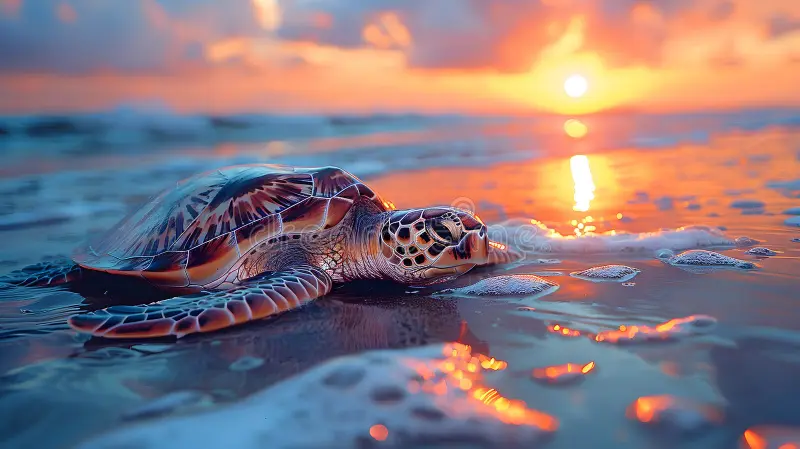

El viaje de las tortugas en Costa Rica
Una historia sobre el ciclo de vida, la migración y la conservación de las tortugas marinas en las costas ticas.

La travesía desde la arena

Cada año, las tortugas marinas emergen en las playas de Costa Rica para anidar. Las hembras excavan nidos en la arena oscura y depositan cientos de huevos antes de regresar al océano.
El tiempo de incubación varía con la temperatura de la arena; cuando el nido está listo, las crías rompen el cascarón y emprenden su primer viaje hacia el océano bajo la protección de la noche.
Los primeros pasos de las crías son los más peligrosos: deben sortear depredadores y la fuerza del oleaje para llegar al agua. Su resistencia y el apoyo de las playas protegidas hacen posible que muchas lleguen al mar.
Ruta hacia el océano

Después de salir del nido, las crías siguen el reflejo de la luna sobre el agua. Este viaje nocturno es crucial para evitar depredadores y orientarse correctamente.
Una vez en el océano, aprenden a aprovechar corrientes marinas y zonas ricas en vegetación marina, alimentándose de algas y esponjas mientras crecen y fortalecen su caparazón.
Desde las playas de Costa Rica, las tortugas recorren grandes distancias en el Pacífico, navegando por corrientes y zonas de alimento antes de regresar años después a la misma costa donde nacieron.
Alimentación de las tortugas
Las tortugas marinas se alimentan de una variedad de plantas y pequeños animales marinos según su especie. Pueden comer algas, pastos marinos, medusas, anfípodos y esponjas mientras se desplazan en su ruta migratoria.
Este proceso de alimentación es esencial para que recuperen energías, crezcan fuertes y puedan regresar a las playas de anidación después de largos viajes.
Conservación y futuro

Los esfuerzos locales mantienen las playas libres de basura y de luces artificiales que desorientan a las crías.
La educación sobre tortugas ayuda a preservar su hábitat y a involucrar a las comunidades en su protección.
Las áreas marinas protegidas ofrecen refugio durante la fase de crecimiento en el océano.
Los programas de rescate ayudan a atender tortugas heridas y el monitoreo científico permite conocer mejor sus rutas y poblaciones.